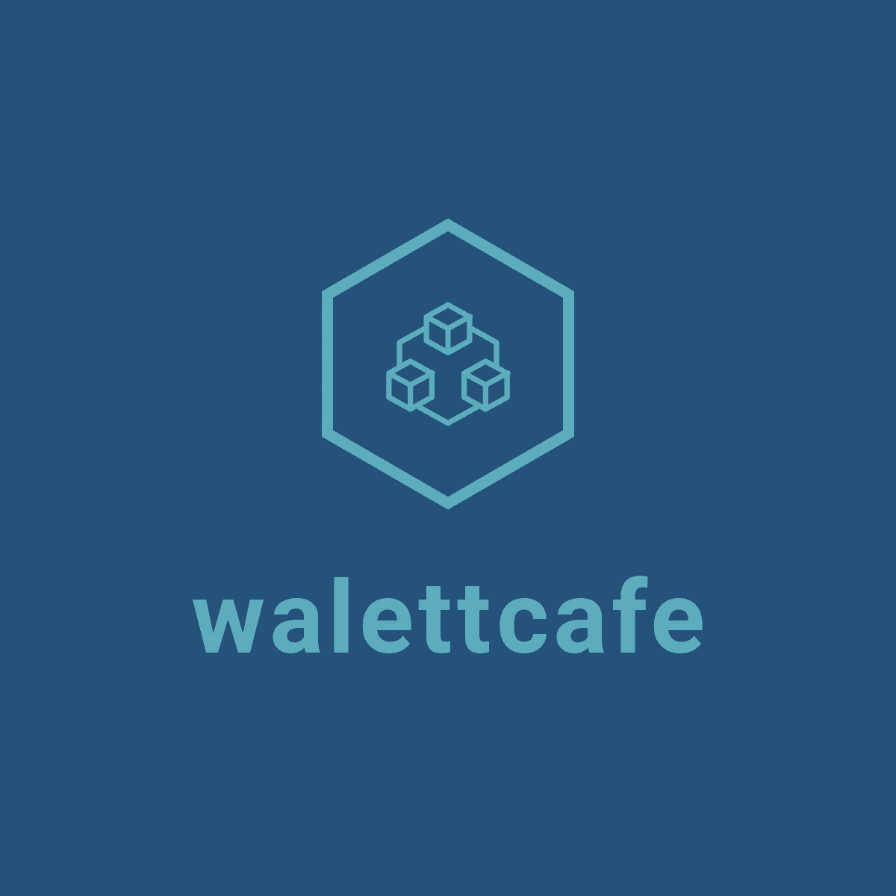

Adegbite Raheem
Web Developer
Contact Info
- Abeokuta, Nigeria.
- +2348106473829
- walett95@gmail.com
- Raheemadegbite
- Raheem-Ade
- @_raheem
PROFESSIONAL SKILLS
- Ability to work with a team and achieve outstanding results.
- Open-mindedness
- Problemn solving and critical thinking.
- Superb customer service skills.
- Great listening skills, empathy and emotional intelligence.
- Ability to influence and negotiate effectively.
- Readiness to learn.
- Detailed oriented.
- integrity and approachability.
TECHNICAL SKILLS
-
Microsoft Word
-
Digital Marketing
-
Internet Researching
-
Software Development
Summary
Highly motivated, talented, and result-oriented Social Media Manager and Creative Director with 3+ years of experience in the private sector. A driven and results-oriented young professional with exemplary project management record, committed to exceeding targets and ensuring team success.
An independent fellow who has soft spot for team/group work. Committed to high standards of service, performance and integrity. Dedicated and reliable with organized, proactive and problem-solving nature.
Work Experience
PYEUS CAFE
2012 – 2014
Operations Officer
- Providing Online Registration of Exams for Individuals and Educational Bodies
- Provides excellent customer care to maintain and improve customer relations, strengthen loyalty and increase product and service needs.
- Contribute to business development efforts to drive revenue and meet business objectives.
- Handle administrative requirements smoothly and efficiently, including maintaining records and submitting daily report.
WALETT CAFE
2015-Till Date
Event Specialist/SM Manager
- Managed administrative logistics of events planning, including event booking, event promotions and fee collections of events organized by 9jacampusstyle.
- Led and collaborated with team members to implement strategic plans for partner brand events like Next Top Model by Valeo.
- Monitored online presence of company’s brand to engage with users and strengthen customer relationships.
Education
Federal University of Agriculture Abeokuta
Ogun State, Nigeria
B.Agric (Agricultural Administration)
2014-2020
African Church Grammar School
Ogun State, Nigeria
O-levels
2005-2011
Professional Development
- Web Development (In-View) – Zero to Mastery.
- Web design-Udemy
- The Strategy of Content Marketing, 2020- Coursera.
interest
- Volunteering
- Travelling
- Gaming
- Reading